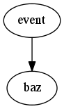

The event data structure is the centrepiece of the life of your pax plugin. Through it, your plug-in has access to the results of previously run plug-ins’ work; in return, you are expected to store the fruits of your plug-in’s labour at an appropriate place in the event data structure.
- ‘channel_occurences’ : This contains the raw waveform occurrences as read by the input plug-in. JoinAndConvertWaveforms beats from this, then deletes it from the event structure: you probably never have to deal with this. Just in case you do, it’s format is similar to channel_waveforms, except that event[‘channel_occurences’][7] gives you a list of (start_sample, raw_sample_list) TUPLES, each representing a waveform occurrence (starting at start_sample) in channel 7.
- ‘channel_waveforms’ : This contains the waveform for every channel, in units of photoelectrons per bin (pe/bin). This implies that the waveforms are already baseline-corrected and gain-corrected. event[‘channel_waveforms’][7] gives you the waveform (a list of floats) for channel 7 if channel 7 contributes to the waveform, and crashes if it does not. A safe way of iterating over all channel waveforms is:
{
"channel_waveforms": see blah,
"processed_waveforms": see blah,
"time": int,
"data": binary,
}
Blah blah

Where the peak starts and ends in the sum waveform
Where the peak starts and ends in the sum waveform
Fill me.